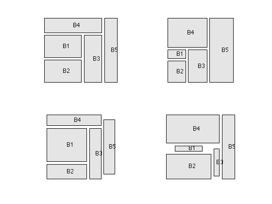

Floor planning
% Section 8.8.1/2, Example 8.7, Boyd & Vandenberghe "Convex Optimization" % Original by Lieven Vandenberghe % Adapted for CVX by Joelle Skaf - 11/13/05 % (a figure is generated) % % Rectangles aligned with the axies need to be place in the smallest % possible bounding box. No overlap is allowed. Each rectangle to be placed % can be reconfigured, within some limits. We are given relative % positioning contrainsts on those rectangles, and minimal required areas. % In the current problem, 5 rectangles are given % input data n = 5; Amin = [100 100 100 100 100; ... 20 50 80 150 200; ... 180 80 80 80 80; ... 20 150 20 200 110]; r = 1; % minimum spacing constraints for iter = 1:4 A = Amin(iter,:); cvx_begin quiet variables x(n) y(n) w(n) h(n) W H minimize ( W + H ) x >= r; y >= r; w >= 0; h >= 0; x(5) + w(5) + r <= W; % No rectangles at the right of Rectangle 5 x(1) + w(1) + r <= x(3); % Rectangle 1 is at the left of Rectangle 3 x(2) + w(2) + r <= x(3); % Rectangle 2 is at the left of Rectangle 3 x(3) + w(3) + r <= x(5); % Rectangle 3 is at the left of Rectangle 5 x(4) + w(4) + r <= x(5); % Rectangle 4 is at the left of Rectangle 5 y(4) + h(4) + r <= H; % No rectangles on top of Rectangle 4 y(5) + h(5) + r <= H; % No rectangles on top of Rectangle 5 y(2) + h(2) + r <= y(1); % Rectangle 2 is below Rectangle 1 y(1) + h(1) + r <= y(4); % Rectangle 1 is below Rectangle 4 y(3) + h(3) + r <= y(4); % Rectangle 3 is below Rectangle 4 w <= 5*h; % Aspect ratio constraints h <= 5*w; w' >= quad_over_lin([A.^.5;zeros(1,n)],h'); cvx_end % Plotting subplot(2,2,iter) for i=1:n fill([x(i); x(i)+w(i); x(i)+w(i); x(i)],[y(i);y(i);y(i)+h(i);y(i)+h(i)],0.90*[1 1 1]); hold on; text(x(i)+w(i)/2, y(i)+h(i)/2,['B',int2str(i)]); end axis([0 W 0 H]); axis equal; axis off; end % print -deps floorplan-opt.eps